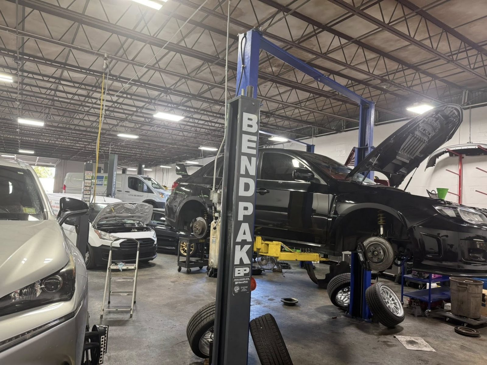
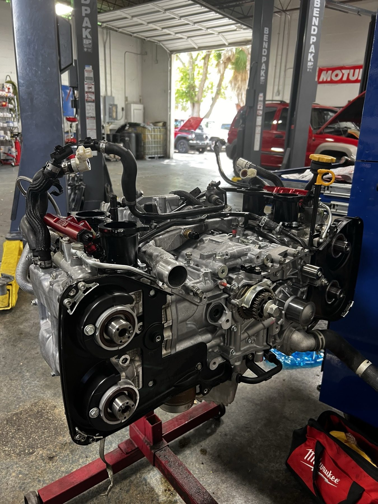
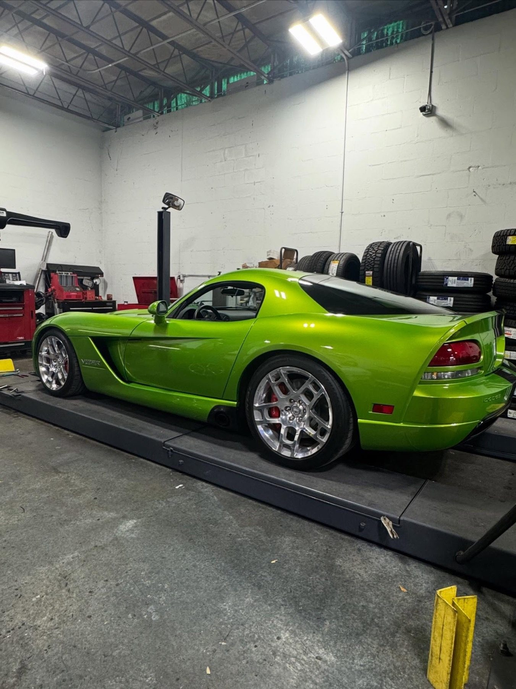
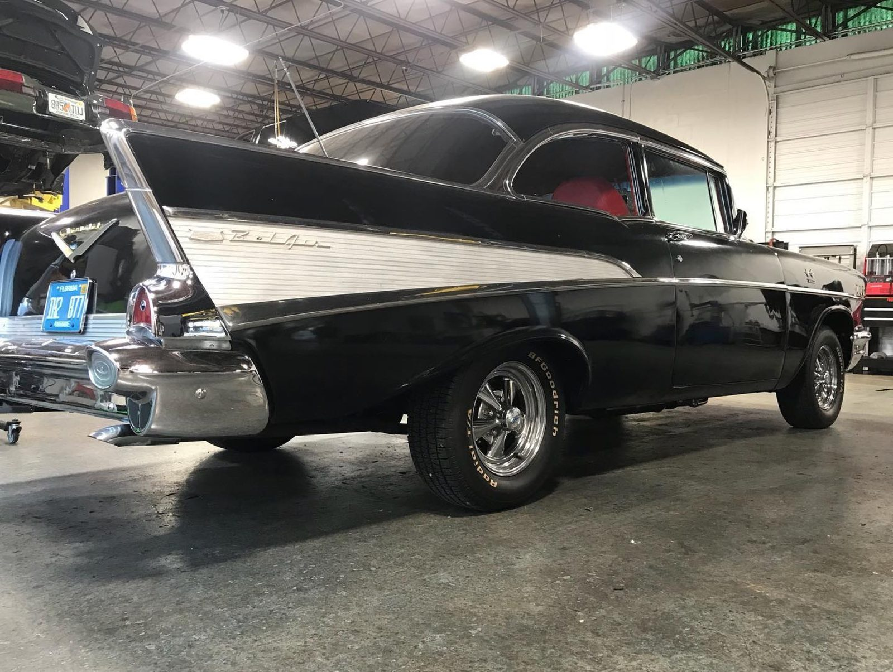
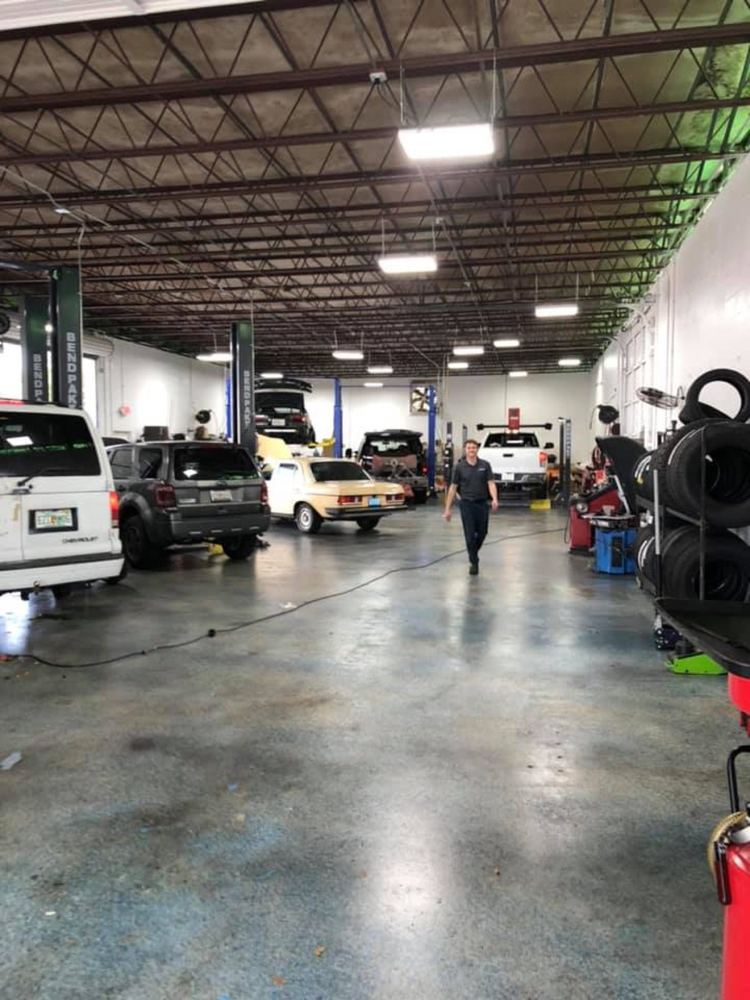
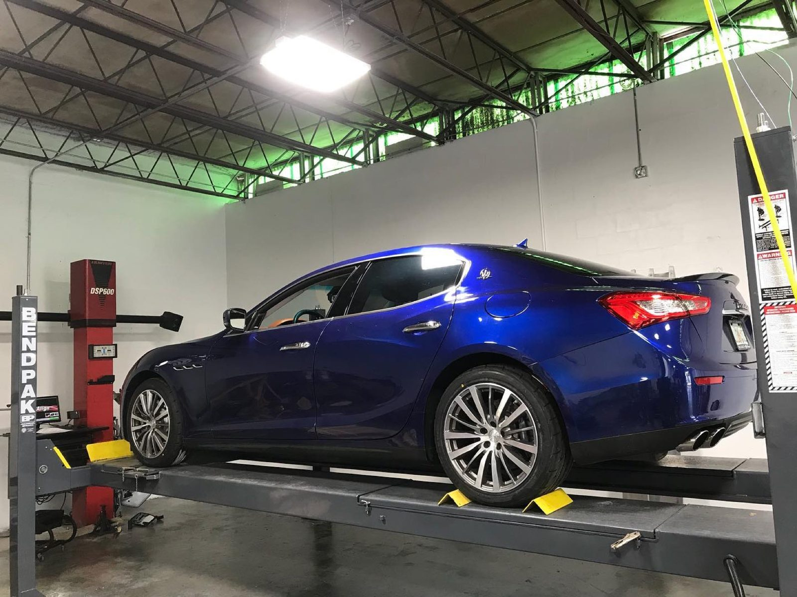
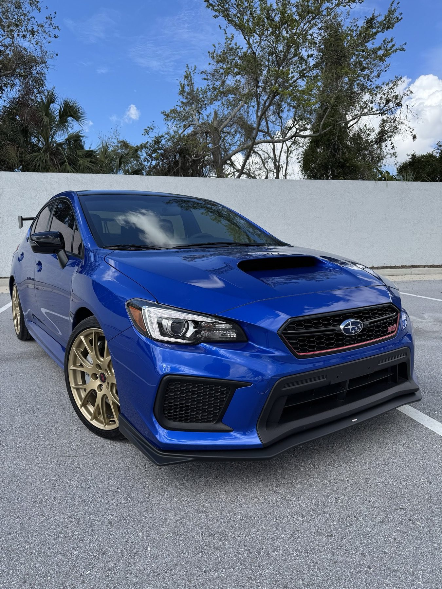
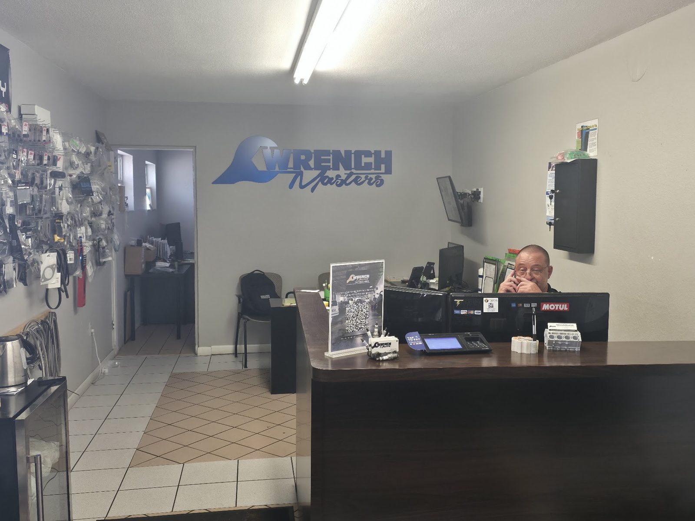

- Standard
- Full synthetic
- Amsoil
Auto repair & performance · St. Petersburg, FL
Repair and performance, done in house
We explain every repair before we start, and never suggest work you do not need.

Team radio
Google reviews
4.9 / 5 · 267 Google reviews
“Kenny and his team here really make you and your vehicle feel welcome, their customer service is top notch professional...... With honest information and a staff that truly cares about your vehicle my 2005 Dodge Ram 1500 has found a new home. My truck was wagging its bumper leaving there like a dog fresh out the pet salon lol..”
“The reason I chose Wrench Masters in the first place was because of the outstanding reviews and recommendations from other customers, and after my experience, I can see why. I don’t normally leave reviews, but these guys deserve the recognition. I recently moved to the area with a heavily modified Subaru and was looking for a shop I could trust. After dealing with several car issues, including an overheating problem that left me without reliable transportation, I was in a difficult position because being without my car was going to directly impact my new job. I showed up one morning without an appointment with my car on a tow truck.”
“Went there for service to get a new clutch, great service. If you go ask for Brian, that’s who I dealt with but all of the staff there is knowledgeable. Tell them goals and they will make it happen. Very satisfy with the service.”
Pit stop
Repair, tires and performance
Oil changes to alignments to custom exhausts, under one roof.
Paddock
From the shop floor












The crew
Family owned since 2016
Kenny Gehringer started Wrench Masters in 2016 and still runs it, an ASE Certified Master Technician.
A real shop. We answer your questions and explain the repair options before any work begins.
- P1Explained firstWe walk you through it before work starts.
- P2Only what is neededWe never suggest work that is not necessary.
- P3Built in houseParts installed and custom pieces fabricated here.

Call or stop by
Find the shop
(727) 565-98085505 64th Way N, St. Petersburg, FL 33709 Directions
Call ahead and we will set up your visit.
- Mon
- 7:30 AM–5:30 PM
- Tue
- 7:30 AM–5:30 PM
- Wed
- 7:30 AM–5:30 PM
- Thu
- 7:30 AM–5:30 PM
- Fri
- 7:30 AM–5:30 PM
- Sat
- Closed
- Sun
- Closed